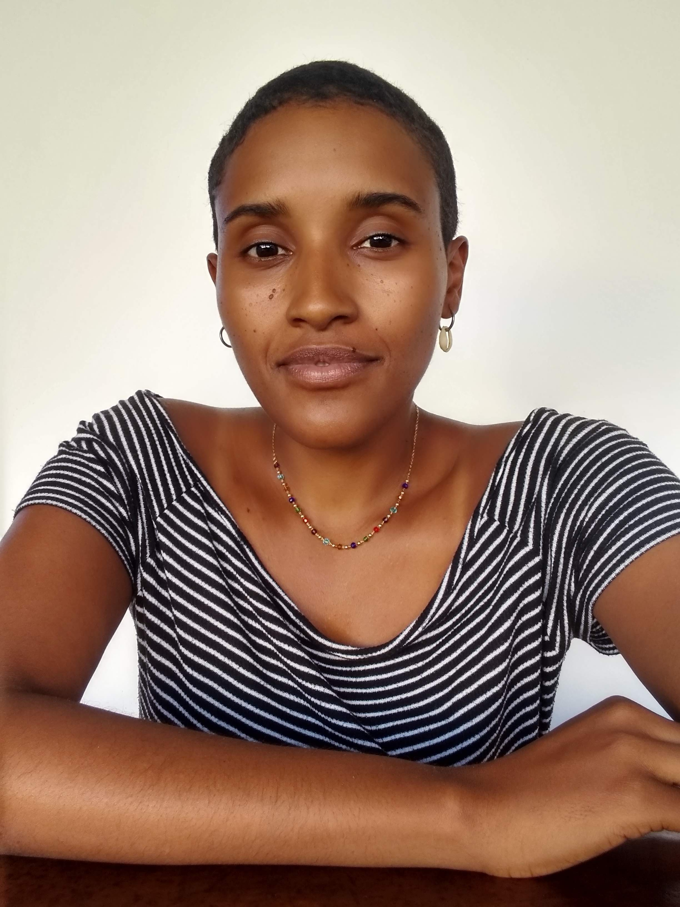

Sobre mim
Olá! Sou Ana Carolina Ferreira, formada em Ciências Biológicas e agora estudando programção. Acredito que Ciência e Tecnologia caminhem lado a lado por isso me interesso em estudar ambas as áreas.
Atualmente estou concluindo o curso de Introdução à Programação do Instituto Minas Programam e iniciando o curso de Cientista de Dados, focando no desenvolvimento FullStack para a àrea de Segrança da Informação